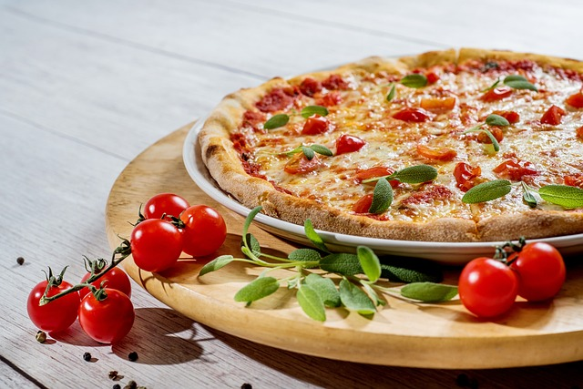

Preparation Time: 40 minutes
Difficulty Level: Medium
Cheese Pizza is a classic Italian dish that is loved all over the world. It consists of a crispy base topped with tomato sauce, cheese, and vegetables.
Making pizza at home is fun and allows you to customize toppings according to your taste. It is perfect for parties, snacks, or weekend meals.
Use fresh cheese for better taste. Do not overload toppings as it may make the base soggy.